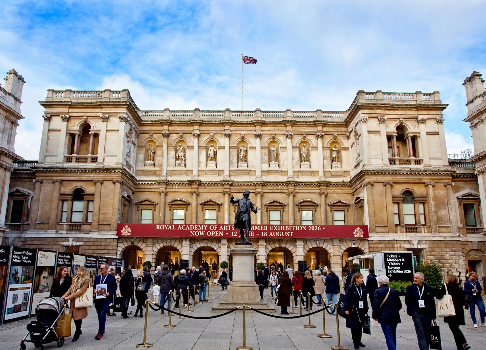

| Founded | 10 December 1768 |
|---|---|
| Location | Burlington House, Piccadilly, London |
| Founder | George III; first president Joshua Reynolds |
| Type | Art institution |
The Royal Academy of Arts (RA) is an art institution based in Burlington House, Piccadilly, London, England. Founded in 1768, it is the oldest fine arts society in Britain and is led by artists and architects — Royal Academicians — to promote the creation, enjoyment, and appreciation of the visual arts.
King George III founded the Academy with 34 members including Joshua Reynolds (first President), Thomas Gainsborough, and Angelica Kauffmann. It moved to Burlington House in 1868. The annual Summer Exhibition, held since 1769, is the world's largest open-submission art show.
The RA runs a postgraduate art school (RA Schools), major loan exhibitions, and is independently funded without regular government subsidy. Presidents have included David Hockney's contemporaries and, in 2019, Rebecca Salter, its first female president.